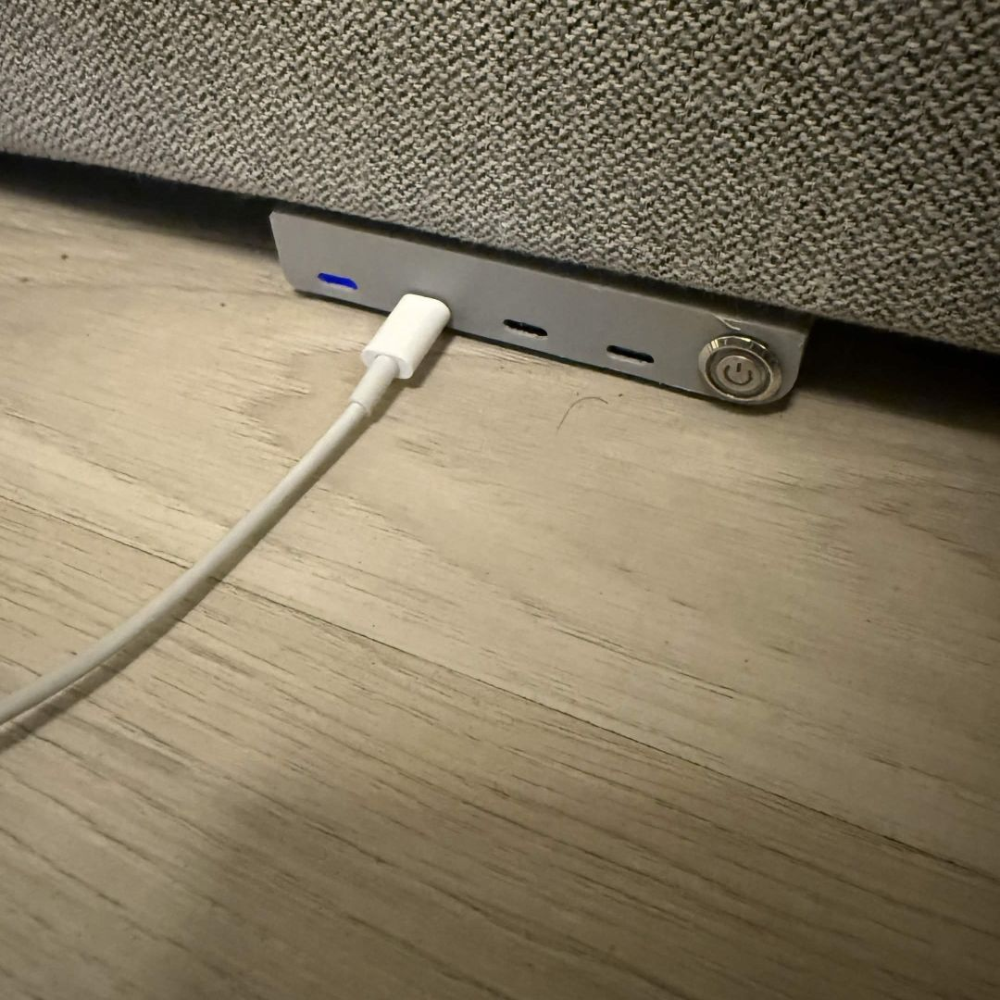

En ladestasjon bygget inn i sofaen
Da jeg begynte på studiet, flyttet jeg inn i et kollektiv med seks andre gutter. Stua hadde ett problem alle merket daglig: å lade en laptop eller en spillenhet betød å dra en kabel tvers over rommet til nærmeste stikkontakt. Løsningen var å slutte å kjempe mot kablene og bygge ladingen inn i møblene: fire USB-C-porter koblet rett inn i sofaen i et 3D-printet hus, matet av en 24 V DC-forsyning dimensjonert slik at alle fire kan kjøre på full effekt samtidig, med én bryter som kutter alt.
Byggingen
Huset ble modellert i Fusion 360 og 3D-printet, dimensjonert til å holde de fire portene og bryteren, og til å sitte rent inntil sofarammen. Du kan snurre modellen rundt nedenfor:
Bak portene sitter en 24 V DC-forsyning som mater alle fire USB-C-utgangene. Den er dimensjonert med nok effektbudsjett til at hver port kan levere full effekt samtidig, uten struping eller deling av én felles skinne når sofaen er full av enheter som lader på én gang.
Problemet
Et kollektiv betyr delte møbler og aldri nok stikkontakter der du faktisk sitter. Syv personer som lader telefoner, kontrollere og laptoper fra et par veggkontakter gjorde stua til en snublefelle av kabler tvers over gulvet og over setene. I stedet for å legge til enda en skjøteledning, la jeg portene der enhetene allerede var: i selve sofaen.


Én bryter kutter strømmen til alle fire portene, greit når man drar hjemmefra, eller bare for å slippe å trikle strøm inn i en kontroller hele natta.
I bruk
Til daglig betyr det bare at du tar en kabel og plugger i uten å tenke på hvor nærmeste kontakt er. Bildet under er det vanlige tilfellet: en Switch Pro-kontroller som lader på puta, matet fra stasjonen bygget inn i sofaen under.